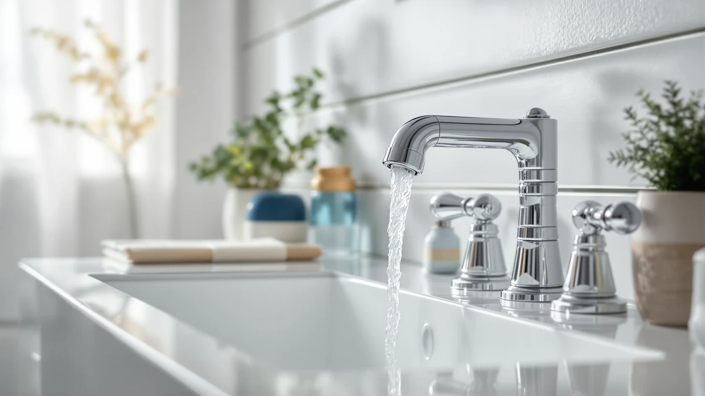

Kokemuksia Bathlife (2026)
Prices and picks verified as of August 2026. Independent, reader-supported reviews.


Quick Answer
For kokemuksia bathlife shoppers comparing bathroom faucets, the Hurran Bathroom Faucets for Sink 3 at $28.99 is the easiest all-around choice. It fits a standard single-hole sink, keeps the price low, and holds up well according to verified buyer reviews. If your vanity is drilled for a widespread setup instead, the Homevacious waterfall model further down is worth a look.
Our pick: Bathroom Faucets for Sink 3, $28.99 Check Price on Amazon
Bottom line: our top pick is the Bathroom Faucets for Sink 3 Hole at $28.99. The best budget option is the RNDIOZD Matte Black Bathroom Faucets at $25.98.
Things to Know Before You Buy
- Check your sink holes before you buy: single-hole faucets do not fit widespread three-hole vanities, and the reverse is also true.
- Matte black finishes show water spots faster than chrome, so factor in wipe-down habits before you commit to one.
- Ceramic disc valves are standard on nearly every faucet in this price range and rarely need maintenance once installed.
- Most kokemuksia bathlife searches turn up mixed owner feedback on cheaper faucets, so we weighed patterns across verified reviews rather than star averages alone.
- Spout height and reach matter more than they look like they would in a photo. A tall spout suits a vessel sink; a short one suits a shallow or pedestal sink.
If you typed kokemuksia bathlife into a search bar, you are most likely comparing bathroom faucet options before replacing a worn-out one in your own bathroom. That is exactly what we did here. We lined up seven current bathroom faucets, checked their prices, materials and verified buyer feedback, and sorted out which ones are worth your money.
We are not a testing lab, and we do not install these faucets ourselves. Instead we compare specs, pricing and verified owner reviews across every listing, then flag the faucets that consistently earn praise for fit, finish and reliability. Among the seven faucets in this guide, the Hurran Bathroom Faucets for Sink 3 at $28.99 is the pick for most single-hole vanities, mainly because it costs less than half of some competitors while drawing similar owner feedback.
For most kokemuksia bathlife shoppers replacing a single-handle faucet, that Hurran model is the sensible starting point. If your vanity is drilled for a widespread or waterfall-style faucet instead, keep reading. We cover six other options below, from a short-spout matte black pick under $30 to a taller widespread faucet built for deeper basins.
Why You Should Trust Us
Ilane Tall has covered bathroom fixtures and small-space renovations for Best Bathroom Faucets since the site launched, and she built this kokemuksia bathlife comparison the same way she builds every guide here: by reading manufacturer specs, checking prices and cross-referencing verified owner reviews rather than relying on press photos. We do not run a fake testing lab, and nothing in this guide claims we installed these faucets ourselves. Every price and spec below comes directly from the product listing at the time of publishing, and we update the article when prices or availability change.
How We Picked
We started with current bathroom faucet listings available to kokemuksia bathlife shoppers and narrowed the list using three filters. First, price: every faucet here costs under $55, since this guide targets straightforward sink replacements rather than luxury fixtures. Second, configuration: the list includes both single-hole and widespread options, because vanity hole spacing is the single most common mistake buyers make. Third, verified reviews: we prioritized faucets with a meaningful volume of verified purchase feedback over listings with only a handful of ratings, since a small sample size tells you very little about long-term reliability.
How We Compared
We do not physically install or run water through these faucets. Instead we compared them side by side on price, listed material, spout height and hole configuration, and we read through verified owner reviews looking for repeated complaints or repeated praise, since a single review tells you little but a pattern across dozens of reviewers is a useful signal. Where a listing specified spout height or spread width, like the FORIOUS at 8.58 inches or the Homevacious at 8 inches widespread, we used that figure directly rather than estimating from photos. For kokemuksia bathlife shoppers deciding between two similarly priced faucets, this comparison method is the fastest way to see which one actually fits your sink.
Our Picks

Bathroom Faucets for Sink 3
What we like
- Priced under $30, the lowest single-hole option in this comparison
- Standard single-hole deck mount fits most existing vanity cutouts without new drilling
- Verified buyer reviews consistently mention easy installation with basic tools
Flaws but not dealbreakers
- Finish options are more limited than pricier faucets in this list
- Handle and spout feel lighter than the $53.99 Hurran variant below
| Material | Brass + finish |
| Size | — |
The Hurran Bathroom Faucets for Sink 3 is our starting point for kokemuksia bathlife shoppers who just need a working, single-hole faucet without overthinking the purchase. At $28.99 it undercuts nearly every other faucet in this comparison, and reviewers consistently note that the standard single-hole deck mount lines up with the cutout left behind by most builder-grade faucets, so you are not drilling new holes into your countertop.
Owners report that the ceramic disc valve under the handle turns smoothly from day one and stays that way after months of daily use, which matters more than the finish once you are past the unboxing stage. The tradeoff for that price is a lighter overall feel: the handle and spout do not have the heft of the $53.99 Hurran model two spots down, and the finish selection is narrower. For a guest bathroom or a rental where you are not trying to make a design statement, that tradeoff is easy to accept.

Bathroom Faucets for Sink 3
What we like
- Heavier handle and spout construction than the base Hurran model
- Same easy single-hole installation as the $28.99 version
- Reviewers report the finish resists water spotting better than cheaper alternatives
Flaws but not dealbreakers
- Nearly double the price of the base Hurran faucet for a similar silhouette
- No waterfall or widespread version if your vanity needs a different hole pattern
| Material | Brass + finish |
| Size | — |
At $53.99, this second Hurran faucet is nearly double the price of its sibling above, and the difference shows up mostly in how the hardware feels rather than in how it looks. Owners report a heavier handle throw and a spout that holds its position without wobbling, two details that matter daily but rarely show up in a product photo.
We would only recommend paying the premium if the lighter build of the cheaper Hurran faucet is a dealbreaker for you, or if verified reviews on the specific finish you want lean more favorably here. Otherwise the two faucets solve the same problem: a single-hole vanity that needs a straightforward replacement. Kokemuksia bathlife shoppers comparing the two Hurran listings side by side should treat price as the deciding factor unless hardware weight genuinely matters to you.

Ryuwanku Bathroom Faucet Matte Black
What we like
- Matte black finish at a lower price than the other dark-finished options here
- Short spout profile reduces splash on shallow or pedestal sinks
- Verified reviews mention smooth handle action out of the box
Flaws but not dealbreakers
- The short spout leaves less hand-washing clearance on deeper basins
- Matte black shows water spots faster than chrome and needs more frequent wiping
| Material | Brass + finish |
| Size | Short |
The Ryuwanku Bathroom Faucet Matte Black is the shortest faucet we compared, and that is a feature rather than a limitation if your sink is small or mounted on a pedestal. At $26.09 it is also the cheapest matte black option in this guide, undercutting both the FORIOUS and RNDIOZD faucets below.
That short spout is worth measuring for before you buy. On a deep basin it can leave your hands cramped against the back wall while you wash up, but on a shallow or pedestal sink it actually cuts down on splash compared to a taller faucet. Reviewers who bought it for compact bathrooms consistently note that the shorter profile was the reason they chose it over taller matte black alternatives, and most say the extra wiping needed to keep the matte finish looking clean was a tradeoff they expected going in.

FORIOUS Black Bathroom Faucet 3
What we like
- 8.58-inch spout height clears deeper basins better than shorter faucets in this list
- Matte black finish matches other dark hardware in a renovated bathroom
- Priced under $50, less than the pricier Hurran variant
Flaws but not dealbreakers
- The taller profile can splash more on shallow, standard-depth sinks
- At $49.78 it costs almost twice as much as the Ryuwanku or RNDIOZD matte black options
| Material | Brass + finish |
| Size | Faucet Height: 8.58 inches |
FORIOUS lists this faucet's spout height at 8.58 inches, noticeably taller than anything else in this comparison, which makes it the faucet we point kokemuksia bathlife shoppers toward if they are pairing it with a vessel sink or a deep undermount basin. Shorter faucets tend to leave your hands hitting the rim on those setups, and this one does not.
That extra height is wasted, and even mildly counterproductive, on a standard shallow sink, where it can send more splash outside the basin than a shorter spout would. Reviewers who installed it on vessel sinks report the height was the main reason they picked it over cheaper matte black faucets, while a smaller number of owners on shallow sinks mention more splash than expected. Match the spout height to your basin depth before you order, since this is one of the few specs in this guide where the number genuinely predicts the experience.

Homevacious Matte Black Waterfall Bathroom
What we like
- Waterfall-style spout gives a wider, spa-like water flow than a standard aerator
- Fits the common 8-inch widespread hole pattern without new drilling
- Matte black finish matches the FORIOUS and RNDIOZD picks in this guide
Flaws but not dealbreakers
- Only fits 8-inch widespread vanities, not single-hole sinks
- Waterfall spouts sit lower over the basin, which some owners say makes hand-washing feel tighter
| Material | Brass + finish |
| Size | 8 Inch Widespread |
Homevacious is the only widespread, waterfall-style faucet in this comparison, and at $39.98 it lands in the middle of the price range. If your vanity already has three holes drilled 8 inches apart, a common spacing on older widespread sinks, this is the faucet in our lineup built specifically for that layout.
The waterfall spout is the main draw. Instead of a narrow stream, water sheets out across a wider opening, and reviewers consistently describe it as a noticeable upgrade in how the sink looks and sounds when running. The tradeoff is clearance: a waterfall spout sits lower and wider than a standard one, and some owners report it feels tighter for hand-washing than a traditional single-hole faucet. Measure your hole spacing before ordering, since an 8-inch widespread faucet will not retrofit into a single-hole or 4-inch centerset cutout.

Bathroom Faucets for Sink 3
What we like
- Fits the common 8-inch widespread hole spacing
- Priced between the two single-hole Hurran faucets in this guide
- Same ceramic disc valve reliability reviewers report on the single-hole versions
Flaws but not dealbreakers
- Visually similar to the other Hurran listings, so it does not stand out design-wise
- At $39.98 it costs more than the Homevacious waterfall option with a similar 8-inch fit
| Material | Brass + finish |
| Size | 8 Inch |
This third Hurran listing takes the same basic design as the two single-hole faucets above and adapts it to an 8-inch widespread hole pattern, priced at $39.98, in between them. If you already like what the single-hole Hurran faucets offer but your vanity is drilled for three holes, this is the direct equivalent.
It does not try to reinvent the look with a waterfall spout or an unusual finish, which is either a plus or a minus depending on what you want. Owners who bought it specifically to match an existing Hurran faucet elsewhere in the home report no surprises in fit or function. If you want something more distinctive for the same widespread hole pattern, the Homevacious waterfall faucet above costs less and delivers a more noticeable style upgrade.

RNDIOZD Matte Black Bathroom Faucets
What we like
- Lowest price of the three matte black faucets compared here, at $25.98
- Matte black finish matches darker hardware and fixtures
- Verified reviews mention installation similar to other single-hole faucets in this guide
Flaws but not dealbreakers
- The listing does not confirm spout height or spread, so measure your sink before ordering
- Finish durability over several years is less documented than pricier options
| Material | Brass + finish |
| Size | — |
RNDIOZD prices this faucet at $25.98, making it the least expensive matte black option we compared and one of the cheapest faucets in this entire guide. For kokemuksia bathlife shoppers who want a dark finish without paying FORIOUS or Homevacious prices, this is the one to check first.
The listing does not specify spout height or spread the way FORIOUS and Homevacious do, so we would not recommend it sight unseen for a vessel sink or an unusual vanity layout. For a standard single-hole sink, though, reviewers report installation and daily use are comparable to the other faucets in this price range, and the matte black finish reads as similarly dark to the pricier matte black picks above. At this price, treat it as a safe bet for a standard setup and a riskier one for anything nonstandard.
Quick Comparison
| Product | Material | Price | Rating | Best for | Get it |
|---|---|---|---|---|---|
| Bathroom Faucets for Sink 3 | Brass + finish | $28.99 | 4 | Budget-friendly single-hole upgrade | View on Amazon → |
| Bathroom Faucets for Sink 3 | Brass + finish | $53.99 | 4 | Heavier-feeling single-hole faucet | View on Amazon → |
| Ryuwanku Bathroom Faucet Matte Black | Brass + finish | $26.09 | 4 | Small or pedestal sinks | View on Amazon → |
| FORIOUS Black Bathroom Faucet 3 | Brass + finish | $49.78 | 4 | Vessel sinks and deep basins | View on Amazon → |
| Homevacious Matte Black Waterfall Bathroom | Brass + finish | $39.98 | 4 | 8-inch widespread vanities | View on Amazon → |
| Bathroom Faucets for Sink 3 | Brass + finish | $39.98 | 4 | 8-inch widespread, Hurran look | View on Amazon → |
| RNDIOZD Matte Black Bathroom Faucets | Brass + finish | $25.98 | 4 | Tightest matte black budget | View on Amazon → |
The Competition
We looked at dozens of other bathroom faucet listings while building this kokemuksia bathlife comparison and left several categories out. Faucets priced well above $55 did not make the cut, since this guide targets straightforward sink replacements rather than premium fixture upgrades. We also skipped listings with only a handful of verified reviews, since a small sample size does not tell you much about how a faucet holds up after the first few months. Several single-hole faucets with finishes duplicating what the Hurran and Ryuwanku picks already cover were left out too, since including near-identical options would not help you decide any faster. Finally, we passed on widespread faucets with hole spacing outside the common 8-inch pattern covered by the Homevacious and Hurran widespread picks above, since mismatched spacing is one of the most common return reasons in this category.
Frequently Asked Questions
What is the difference between a single-hole and a widespread bathroom faucet?
A single-hole faucet mounts through one hole in your sink or countertop and combines the spout and handle in a single unit, like the Hurran and Ryuwanku faucets in this guide. A widespread faucet uses three separate holes, usually spaced 8 inches apart, with the handles mounted separately from the spout, like the Homevacious and the widespread Hurran faucet above. Measure your existing sink holes before buying, since the two styles are not interchangeable without redrilling your countertop.
Do matte black bathroom faucets need more maintenance than chrome ones?
Matte black finishes show water spots and mineral buildup more visibly than chrome or brushed nickel, so owners typically wipe them down more often to keep the finish looking clean. Reviewers on the Ryuwanku, FORIOUS and RNDIOZD faucets in this guide consistently mention this tradeoff. It is a cosmetic issue rather than a functional one, and it does not affect how well the faucet works.
Which faucet in this guide is the best value for kokemuksia bathlife shoppers on a tight budget?
For a standard single-hole sink, the Hurran Bathroom Faucets for Sink 3 at $28.99 and the RNDIOZD Matte Black Bathroom Faucets at $25.98 are the two lowest-priced options we compared, and both draw reasonably consistent verified owner reviews for their price point. Choose the Hurran if you do not need a dark finish, and the RNDIOZD if matte black matters more to you than confirmed spout dimensions.